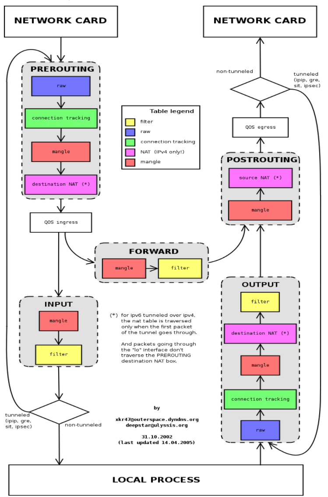
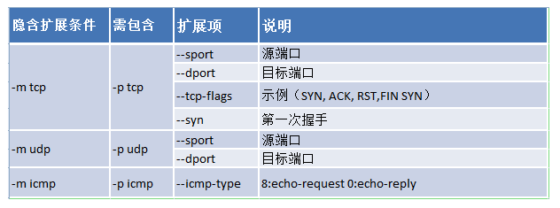
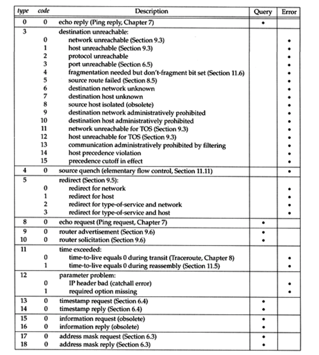
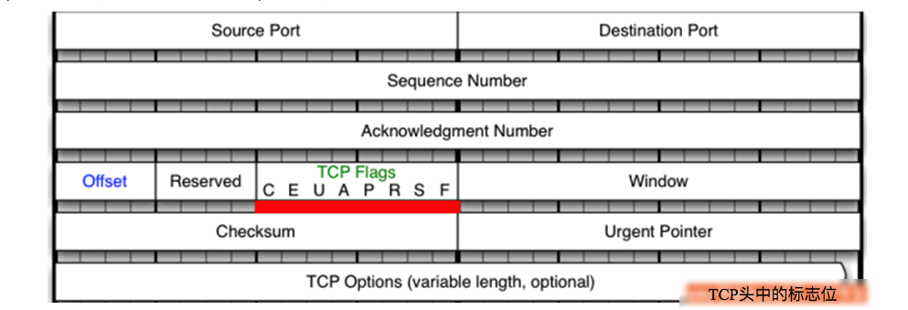
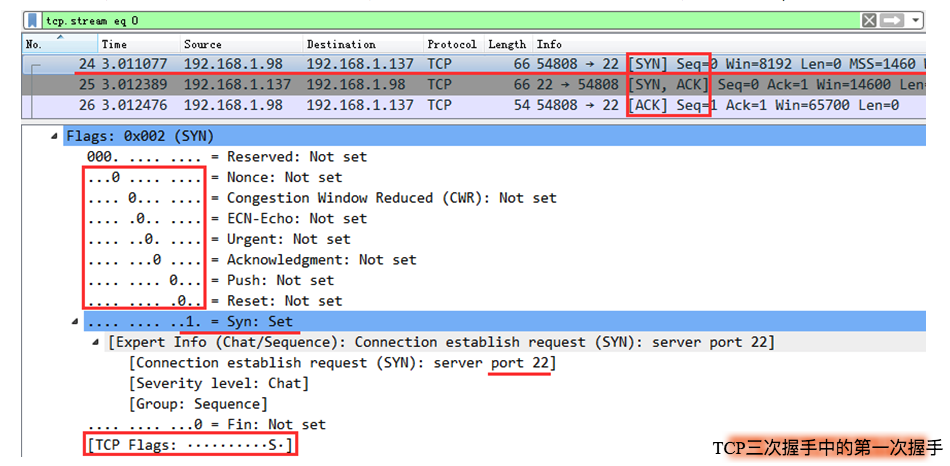
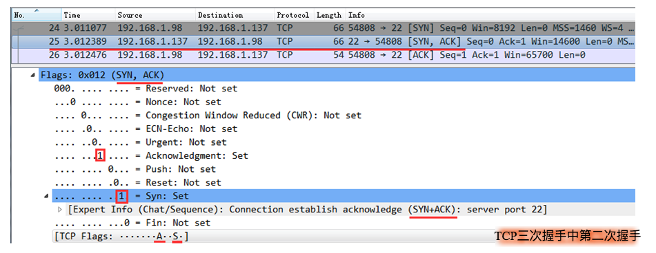
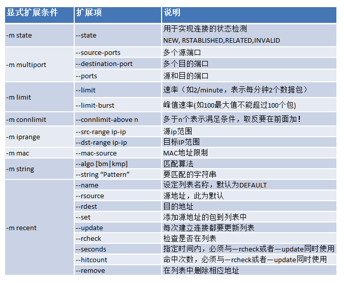
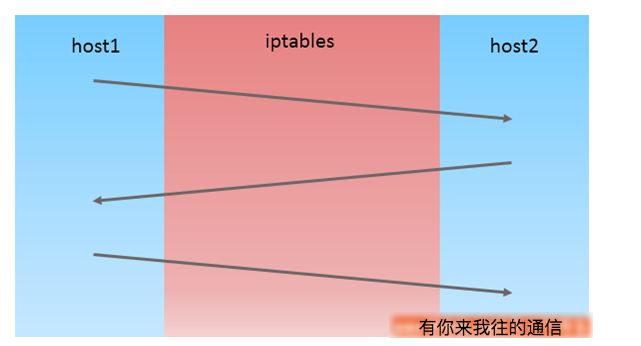

纸上得来终觉浅，绝知此事要躬行。
iptables 是运行在用户空间的应用软件，通过控制 Linux 内核 netfilter 模块，来管理网络数据包的处理和转发。在大部分 Linux 发行版中，可以通过手册页 或 man iptables 获取用户手册。通常 iptables 需要内核模块支持才能运行，此处相应的内核模块通常是 Xtables。

1. 匹配条件
这里对匹配条件进行一个大致的分类，可以便于我们今后的使用和理解

- 基本匹配
-p 协议名称：匹配协议-s IP\|Netaddr：匹配来源地址-d IP\|Netaddr：匹配目标地址
- 扩展匹配
- 隐式扩展：对使用
-p 协议名称指明的协议进行的扩展，可省略-m选项 - 显式扩展：必须使用
-m选项指定使用的扩展
- 隐式扩展：对使用
# 查看显式扩展模块，小写的为模块，大写的为target
[root@MiWiFi-R3-srv ~]# rpm -ql iptables | grep "[[:lower:]]\+\.so$"
/lib64/xtables/libipt_icmp.so
/lib64/xtables/libxt_string.so
/lib64/xtables/libxt_tcp.so
/lib64/xtables/libxt_time.so
/lib64/xtables/libxt_tos.so
/lib64/xtables/libxt_udp.so
......2. 基本匹配
基本匹配都是我们使用
iptables非常常用的基础匹配参数
2.1 匹配参数
| 命令参数 | 作用说明 |
|---|---|
-p 协议名称 |
匹配协议，如 TCP、UDP、ICMP 等 |
-s IP|Netaddr |
匹配来源地址，IP/MASK，加叹号“!”表示除这个 IP 外 |
-d IP|Netaddr |
匹配目标地址，IP/MASK，加叹号“!”表示除这个 IP 外 |
-i 网卡名称 |
匹配从这块网卡流入的数据；仅能用于 PREROUTING, INPUT 及 FORWARD 链上 |
-o 网卡名称 |
匹配从这块网卡流出的数据；仅能用于 FORWARD, OUTPUT 及 POSTROUTING 链上 |
2.2 实战演示
- [1] 匹配条件：匹配来源地址
# 匹配来源地址
$ sudo iptables -t filter -I INPUT -s 192.168.31.19 -j DROP
$ sudo iptables -t filter -I INPUT -s 192.168.31.0/24 -j DROP
$ sudo iptables -t filter -I INPUT -s 192.168.31.19,192.168.31.173 -j DROP# 此示例，不仅了解到了怎样对匹配条件取反，还加深了我们对默认策略的了解
# 报文的源IP不是192.168.31.19时会被接收，并不能代表，报文的源IP是192.168.31.19时就会被拒绝
$ sudo iptables -t filter -I INPUT ! -s 192.168.31.19 -j ACCEPT- [2] 匹配条件：匹配目标地址
# 本机除了有回环地址，还有两块网卡
$ sudo ifconfig | awk '/inet addr/{print $1, $2}'
inet addr:192.168.31.19
inet addr:192.168.31.173
inet addr:127.0.0.1# 匹配目标地址
$ sudo iptables -t filter -I INPUT -d 192.168.31.173 -j DROP
$ sudo iptables -t filter -I INPUT -s 192.168.31.110 -d 192.168.31.19 -j DROP- [3] 匹配条件：协议类型
# CentOS6中，-p选项支持如下协议类型:
tcp, udp, udplite, icmp, esp, ah, sctp
# CentOS7中，-p选项支持如下协议类型:
tcp, udp, udplite, icmp, icmpv6,esp, ah, sctp, mh
# 当不使用-p指定协议类型时，默认表示所有类型的协议都会被匹配到，与使用-p all的效果相同。# 协议类型
$ sudo iptables -t filter -I INPUT -p tcp \
-s 192.168.31.110 -d 192.168.31.19 -j REJECT- [4] 匹配条件：网卡接口
# 仅能用于PREROUTING, INPUT及FORWARD链上
# 当本机有多个网卡时，我们可以使用 -i 选项去匹配报文是通过哪块网卡流入本机
$ sudo iptables -t filter -I INPUT -i eth0 -p icmp -j DROP3. 隐式扩展
对使用
-p 协议名称指明的协议进行的扩展，可省略-m选项
-m tcp --dport 22<=等价于=>-p tcp --dport 22
3.1 匹配参数
[!] –sport port[:port]和[!] –dport port[:port]
- 不管是
TCP还是UDP的源端口(--dport)和目标端口(--sport)都支持单个端口或连续多个端口 - 如果需要指定连续多个端口，使用
-符号进行分隔即可，如--dport 1024-2596限制连续端口号
- 不管是
[!] –tcp-flags mask comp
- 表示检查
mask所指明的所有标志位，且这其中，comp所表示出的所有标记位必须为1，而余下的必须为0 - 没有在
mask中指明的标志位，不作任何检查，可以为SYN,ACK,FIN,RST,PSH,URG - 多个标志位需要使用
,进行分隔，如--tcp-flags SYN,ACK,FIN,RST SYN表示TCP三次握手的第一次请求
- 表示检查
[!] –syn
- 等价于
--tcp-flags SYN,ACK,FIN,RST SYN表示TCP三次握手的第一次请求
- 等价于
[!] –icmp-type
0：表示echo-reply的意思，即icmp请求响应包，定义在OUTPUT链上8：表示echo-request的意思，即icmp请求包，定义在INPUT链上

icmp报文码

3.2 实战演示
介绍实际使用当中编写规则的具体细则！
- [1] 限制对本机
ssh服务的连接
$ sudo iptables -t filter -I INPUT -p tcp --dport 22 -j DROP
$ sudo iptables -t filter -I INPUT -p tcp -s 192.168.31.110 --dport 22 -j DROP# 匹配22号到25号之间的所有端口
$ sudo iptables -t filter -I INPUT -p tcp --dport 22:25 -j REJECT
# 匹配0号到22号之间的所有端口
$ sudo iptables -t filter -I INPUT -p tcp -s 192.168.31.110 --dport :22 -j REJECT
# 匹配80号端口以及其以后的所有端口，直到65535
$ sudo iptables -t filter -I INPUT -p tcp -s 192.168.31.110 --dport 80: -j REJECT- [2] 限制
icmp报文的连接
# 出入都禁止
$ sudo iptables -t filter -I INPUT -p icmp -m icmp --icmp-type 8/0 -j REJECT
$ sudo iptables -t filter -I INPUT -p icmp --icmp-type 8 -j REJECT
$ sudo iptables -t filter -I OUTPUT -p icmp -m icmp --icmp-type 0/0 -j REJECT
$ sudo iptables -t filter -I OUTPUT -p icmp --icmp-type 0 -j REJECT
# 和使用--icmp-type 8的效率一样
$ sudo iptables -t filter -I INPUT -p icmp --icmp-type "echo-request" -j REJECT3.3 tcp-flags 参数
见名知义，--tcp-flags指的就是TCP头中的标志位。所有我们在使用iptables时，可以通过此扩展匹配条件，去匹配TCP报文的头部的标识位，然后根据标识位的实际情况实现访问控制的功能。
- TCP 头中的标志位
在使用iptables时，使用TCP扩展模块的--tcp-flags选项，即可对上图中的标志位进行匹配，判断指定的标志位的值是否为1。我们继续聊TCP的标识位，在TCP协议建立连接的过程中，需要先进行三次握手，而三次握手就要依靠TCP头中的标志位进行。

- TCP 三次握手中的第一次握手
- 下图为
TCP三次握手中的第一次握手，客户端(IP 为98)使用本地的随机端口54808向服务端(IP 为137)发起连接请求，TCP头的标志位中，只有SYN位被标识为1，其他标志位均为0。 - 在下图的下方可以看到
[TCP Flags: ··········S·]，其中的“S“就表示SYN位，整体表示只有SYN位为1。
- 下图为

- TCP 三次握手中第二次握手
- 下图是第二次握手的，服务端回应刚才的请求，将自己的
TCP头的SYN标志位也设置为1，同时将ACK标志位也设置为1。 - 下图中的下方显示的标志位列表也变成了，
[TCP Flags: ·······A··S·]，表示只有ACK标志位与SYN标志位为1。
- 下图是第二次握手的，服务端回应刚才的请求，将自己的

- iptables 的拒绝访问
# 匹配TCP三次握手中的第一次握手，并且拒绝
$ sudo iptables -t filter -I INPUT -p tcp --dport 22 \
--tcp-flags SYN,ACK,FIN,RST,URG,PSH SYN -j REJECT# 匹配TCP三次握手中的第二次握手，并且拒绝
$ sudo iptables -t filter -I INPUT -p tcp --dport 22 \
--tcp-flags SYN,ACK,FIN,RST,URG,PSH SYN,ACK -j REJECT# 上例中的两条命令还可以简写为如下模样
# 没错，我们可以用ALL表示SYN,ACK,FIN,RST,URG,PSH
$ sudo iptables -t filter -I INPUT -p tcp --dport 22 \
--tcp-flags ALL SYN -j REJECT
$ sudo iptables -t filter -I INPUT -p tcp --dport 22 \
--tcp-flags ALL SYN,ACK -j REJECT# 使用--syn选项相当于使用--tcp-flags SYN,RST,ACK,FIN SYN，就是TCP三次握手中的第一次握手
$ sudo iptables -t filter -I INPUT -p tcp --dport 22 --syn -j REJECT4. 显式扩展
必须使用
-m选项指定使用的扩展
4.1 匹配参数
- 【1】multiport 扩展
- 以离散方式定义多端口匹配，最多指定 15 个端口
[!] --ports port[,port,port:port]：既可以是源端口也可以是目标端口[!] --source-ports,--sports port[,port,port:port]：指明多个离散的源端口[!] --destination-ports,--dports port[,port,port:port]：指明多个离散的目标端口
- 【2】iprange 扩展
- 指明连续的 IP 地址范围时使用，但一般是不能扩展为整个网络
[!] --src-range from[-to]：指明连续的源 IP 地址范围[!] --dst-range from[-to]：指明连续的目标 IP 地址范围
- 【3】string 扩展
- 检查报文中出现的字符串，包含所有字符串中匹配，必须给定比对算法
--algo {bm|kmp}：指明字符串比对算法[!] --string pattern：指定字符串匹配[!] --hex-string pattern：指定 16 进制匹配
- 【4】time 扩展
- 根据报文到达的时间与指定的时间范围进行匹配，这里使用 UTC 的时间，如果与本机时区时间不匹配需要换算
--datestart YYYY[-MM[-DD[Thh[:mm[:ss]]]]]：指定起始日期，符号 T 表示分隔符--datestop YYYY[-MM[-DD[Thh[:mm[:ss]]]]]：指定结束日期，符号 T 表示分隔符--timestart hh:mm[:ss]：指定起始时间--timestop hh:mm[:ss]：指定结束时间--monthdays day[,day...]：指定在每月的那几日进行检查--weekdays day[,day...]：指定在每月的周几进行检查- 可多个选项配合起来，来使用限制条件
- 【5】connlimit 扩展
- 根据每客户端 IP(也可以是地址块)做并发连接数数量匹配
--connlimit-above n：连接的数量大于 n--connlimit-upto n: 连接的数量小于等于 n
- 【6】limit 扩展
- 基于收发报文的速率做检查，使用令牌桶过滤器算法来速率限制
--limit-burst number：限制峰值--limit rate[/second|/minute|/hour|/day]：限制时间速率
- 【7】state 扩展
- 根据请求状态做匹配限制，有可能需要装载模块
[!] --state STATE1,STATE2,...- 可追踪的连接状态
- (1)
NEW：新发出请求；连接追踪的记录文件中不存此连接相关的信息条目，因此将其识别为第一次发出的请求 - (2)
ESTABLISHED：NEW 状态之后，连接追踪模板中为其建立的条目失效之前期间内所进行的通信的状态 - (3)
RELATED：相关的连接；如 ftp 协议的命令连接与数据连接之间的关系； - (4)
INVALIED：无法识别的连接

4.2 简单示例
- [1] multiport
# 使用了multiport扩展模块的--dports扩展条件
# 以同时指定了多个离散的端口，每个端口之间用逗号隔开
$ sudo iptables -t filter -I INPUT -p tcp \
-s 192.168.31.110 -m multiport --dport 22,80,443 -j DROP
# 使用multiport模块的--sports与--dpors时，也可以指定连续的端口范围
$ sudo iptables -t filter -I INPUT -p tcp \
-s 192.168.31.110 -m multiport --dport 22,80:90 -j DROP# 如果默认策略都是REJECT的话，放行需要INPUT和OUTPUT双向进行，这里默认策略都是REJECT
$ sudo iptables -I INPUT -s 172.16.0.0/16 \
-d 172.16.100.9 -p tcp -m multiport --dports 22,80 -j ACCEPT
$ sudo iptables -I OUTPUT -d 172.16.0.0/16 \
-s 172.16.100.9 -p tcp -m multiport --sports 22,80 -j ACCEPT- [2] iprange
# 如果默认策略都是REJECT的话，放行需要INPUT和OUTPUT双向进行，这里默认策略都是REJECT
$ sudo iptables -I INPUT -d 172.16.100.9 -p tcp -m multiport \
--dports 22:23,80 -m iprange --src-range 172.16.100.1-172.16.100.120 -j ACCEPT
$ sudo iptables -I OUTPUT -s 172.16.100.9 -p tcp -m multiport \
--sports 22:23,80 -m iprange --dst-range 172.16.100.1-172.16.100.120 -j ACCEPT- [3] string
# 匹配报文test_html字段
$ sudo iptables -I OUTPUT -m string --algo bm --string 'test_html' -j REJECT
# 匹配报文Google字段
$ sudo iptables -I OUTPUT -m string --algo bm --string 'Google' -j REJECT- [4] time
# web站点在在指定时间点内不允许访问
$ sudo iptable -I INPUT -d 172.16.100.9 -p tcp \
--dport 80 -m time --timestart 14:00 --timestop 16:00 -j REJECT
# 多个时间点进行限制
$ sudo iptables -A INPUT -s 172.16.0.0/16 -d 172.16.100.100 -p tcp \
--dport 80 -m time --timestart 14:30 --timestop 18:30 --weekdays Sat,Sun -j DROP- [5] connlimit
# 设置客户端并发数量
$ sudo iptables -A INPUT -p tcp --syn \
--dport 23 -m connlimit --connlimit-above 2 -j REJECT
$ sudo iptables -A INPUT -p tcp --syn \
--dport 23 -m connlimit --connlimit-upto 2 -j ACCEPT- [6] limit
# 限制PING限制, 使用ping -w/W/c做测试验证
# 如果默认策略都是REJECT的话，放行需要INPUT和OUTPUT双向进行，这里默认策略都是REJECT
$ sudo iptables -A INPUT -d 172.16.100.9 -p icmp -icmp-type 8 \
-m limit --limit-burst 5 --limit rate 30/minute -j ACCEPT
$ sudo iptables -A OUTPUT -s 172.16.100.9 \
-p icmp -icmp-type 0 -j ACCEPT# 前五个不限制，超过后每分钟只响应三个
$ sudo iptables -A INPUT -d 172.16.100.100 -p icmp --icmp-type 8 \
-m limit --limit 3/minute --limit-burst 5 -j ACCEPT- [7] state
# 如果默认策略都是REJECT的话，放行需要INPUT和OUTPUT双向进行，这里默认策略都是REJECT
$ sudo iptables -A INPUT -d 172.16.100.100 -p tcp \
-m multiport --dports 22,80 -m state --state NEW,ESTABLISHED -j ACCEPT
$ sudo iptables -A OUTPUT -s 172.16.100.100 -p tcp \
-m multiport --sports 22,80 -m state --state ESTABLISHED -j ACCEPT4.3 state 扩展
state 模块的连接追踪功能 ==> iptables 官方文档
- 连接追踪的起因
当我们作为客户端通过http访问网站网页的时候，会向服务端的80端口发起请求，服务端再通过80端口响应我们的请求。作为客户端，我们似乎需要放行80端口，以便服务端回应我们的报文可以进入客户端主机。同理，当我们通过ssh工具远程连接到某台服务器时，也应当的放行了22号端口，以便远程主机的响应请求能够通过防火墙。
那么，如果我们需要管理的主机越来越多呢？如果管理成百上千主机，这样防火墙规则也就越来越多，且越来越难为维护。80端口就更别提了，难道你每次访问一个新的网址，都要对这个网址添加信任吗？这显然不太合理。
如果我们针对对应的端口，使用--tcp-flags去匹配TCP报文的标志位，把外来的第一次握手的请求拒绝，是不是也可以呢？那么如果对方使用的是UDP协议或者ICMP协议呢？似乎总是有一些不完美的地方。究其原因，问题就是：怎样判断这些报文是为了回应我们之前发出的报文，还是主动向我们发送的报文呢？
我们可以通过iptables的state扩展模块解决上述问题，state模块可以让iptables实现“连接追踪”机制。
- 连接追踪的过程
在TCP/IP协议簇中，只有TCP才有连接概念(三次握手/四次挥手)，而对于UDP和ICMP是没有所谓连接的概念。但是对于iptables的state模块来说，TCP报文、UDP报文、ICMP报文都是有连接状态的。我们可以这样认为，对于state模块而言，只要两台机器在“你来我往”的通信，就算建立起了连接。

state 模块的 5 种状态
对于state模块的连接而言，连接其中的报文可以分为 5 种状态：
- NEW：连接中的第一个包，状态就是 NEW，我们可以理解为新连接的第一个包的状态为 NEW
- ESTABLISHED：我们可以把 NEW 状态包后面的包的状态理解为 ESTABLISHED，表示连接已建立
- RELATED：相关的连接，如 ftp 协议的命令连接与数据连接之间的关系
- 比如 FTP 服务，FTP 服务端会建立两个进程，一个命令进程，一个数据进程
- 具体传输哪些数据是由命令去控制的，所以数据连接中的报文与命令连接是有关系的
- 那么，数据连接中的报文可能就是 RELATED 状态，因为这些报文与命令连接中的报文有关系
# 本机网卡接口
$ sudo ifconfig | awk '/inet addr/ {print $1 $2}'
inet addr:192.168.31.19
inet addr:127.0.0.1
# 设置防火墙规则
$ sudo iptables -t filter -F
$ sudo iptables -t filter -I INPUT -m state --state RELATED,ESTABLISHED -j ACCEPT
$ sudo iptables -t filter -A INPUT -j REJECT
# 远程连接19主机被拒绝
$ sudo ssh 192.168.31.19
ssh: connect to host 192.168.31.19 port 22: Connection refused- UNTRACKED：报文未被追踪，通常表示无法找到相关的连接
- INVALID：如果一个包没有办法被识别或者这个包没有任何状态，那么这个包就是 INVALID 的状态
state 模块的常见配置
- 调整连接追踪功能所能够容纳的最大连接数量
- 文件：
/proc/sys/net/nf_conntrack_max
- 文件：
$ sudo cat /proc/sys/net/nf_conntrack_max
15204- 修改链接跟踪表的容量
iptables的链接跟踪表最大容量由/proc/sys/net/ipv4/目录下的ip_conntrack_max或者是if_conntrack_max- 链接碰到各种状态的超时后就会从表中删除
# 所以解決方法一般有两个
# (1) 加大 ip_conntrack_max 值
$ sudo vi /etc/sysctl.conf
net.ipv4.ip_conntrack_max = 393216
net.ipv4.netfilter.ip_conntrack_max = 393216
# (2): 降低 ip_conntrack timeout时间
$ sudo vi /etc/sysctl.conf
net.ipv4.netfilter.ip_conntrack_tcp_timeout_established = 300
net.ipv4.netfilter.ip_conntrack_tcp_timeout_time_wait = 120
net.ipv4.netfilter.ip_conntrack_tcp_timeout_close_wait = 60
net.ipv4.netfilter.ip_conntrack_tcp_timeout_fin_wait = 120- 已经追踪到并记录下的连接
- 文件：
/proc/net/nf_conntrack - 连接追踪模板(
nf_conntrack) - 长时间不访问就会被自动清除掉保存的记录
- 文件：
$ sudo cat /proc/net/nf_conntrack
ipv4 2 tcp 6 430977 ESTABLISHED src=192.168.31.19 dst=199.239.182.169 sport=58206 dport=80 src=199.239.182.169 dst=192.168.31.19 sport=80 dport=58206 [ASSURED] mark=0 secmark=0 use=2
ipv4 2 udp 17 13 src=192.168.31.19 dst=192.168.31.1 sport=35887 dport=53 src=192.168.31.1 dst=192.168.31.19 sport=53 dport=35887 mark=0 secmark=0 use=2
ipv4 2 udp 17 28 src=192.168.31.19 dst=192.168.31.1 sport=54972 dport=53 src=192.168.31.1 dst=192.168.31.19 sport=53 dport=54972 mark=0 secmark=0 use=2
......- 不同协议或连接类型追踪的时长
- 目录：
/proc/sys/net/netfilter/ - 定义，如
ssh、http、ftp等协议的连接追踪时长
- 目录：
$ sudo ls /proc/sys/net/netfilter/
nf_conntrack_acct nf_conntrack_generic_timeout nf_conntrack_tcp_max_retrans nf_conntrack_tcp_timeout_syn_recv
nf_conntrack_buckets nf_conntrack_icmp_timeout nf_conntrack_tcp_timeout_close nf_conntrack_tcp_timeout_syn_sentnf_log
......state 扩展根据连接追踪机制检查连接的状态，启用连接追踪功能，十分消耗资源且会降低请求速率。对于高负载的服务器开启此功能需要慎重，像使用
LVS的服务器需要将数值调大。
- 通用格式
[!] --state STATE1,STATE2,...
- 可追踪的连接状态
NEW：新发出的请求；连接追踪模板中不存此连接相关的信息条目，因此将其识别为第一次发出的请求ESTABLISHED：NEW 状态之后，连接追踪模板中为其建立的条目失效之前期间内所进行的通信的状态RELATED：相关的连接，如 ftp 协议的命令连接与数据连接之间的关系INVALIED：无法识别的连接
# 如果默认策略都是REJECT的话，放行需要INPUT和OUTPUT双向进行，这里默认策略都是REJECT
# 对目标地址为172.16.100.100且端口为22、80的请求，如果INPUT状态是新建或者建立之后的通信给与放行
$ sudo iptables -A INPUT -d 172.16.100.100 -p tcp -m multiport \
--dports 22,80 -m state --state NEW,ESTABLISHED -j ACCEPT
# 如果本地不需要访问外部服务的话，就不需要放行OUTPUT为新建的请求了
$ sudo iptables -A OUTPUT -s 172.16.100.100 -p tcp -m multiport \
--sports 22,80 -m state --state ESTABLISHED -j ACCEPT4.4 高级示例
- [问题 1]：如何开放 ICMP 服务？
# 如果默认策略都是REJECT的话，放行需要INPUT和OUTPUT双向进行，这里默认策略都是REJECT
$ sudo iptables -A INPUT 172.16.100.9 -p icmp --icmp-type 8 \
-m state --state NEW,ESTABLISHED -j ACCEPT
# 自己不允许ping别人的情况下，只开放别人ping自己请求
$ sudo iptables -A OUTPUT 172.16.100.9 -p icmp --icmp-type 0 \
-m state --state ESTABLISHED -j ACCEPT# 将上面的多条策略合并为一条，即提高效率有可以增强安全性
$ sudo iptables -I INPUT -m state --state ESTABLISHED -j ACCEPT
$ sudo iptables -I INPUT 2 -d 172.16.100.9 -p tcp -m multiport \
--dports 22,80 -m state --state NEW -j ACCEPT
$ sudo iptables -A INPUT 172.16.100.9 -p icmp --icmp-type 8 -m state --state NEW -j ACCEPT
$ sudo iptabels -I OUTPUT -m state --state ESTABLISHED -j ACCEPT- [问题 2]：如何放行本机对自身 WEB 服务的访问？
# 这里默认策略都是REJECT，所有需要双向放行
$ sudo iptables -I INPUT -d LocalIP -i lo0 -j ACCEPT
$ sudo iptables -I OUTPUT -s LocalIP -i lo0 -j ACCEPT- [问题 3]：如何开放主动模式的 ftp 服务？（反弹式木马）
# (1) 装载ftp追踪时的专用的模块
$ sudo modprobe nf_conntrack_ftp
# (2) 这里默认策略都是REJECT，所有需要双向放行
$ sudo iptables -A INPUT -d LocalIP -p tcp --dport 22 -m state --state NEW,ESTABLISHED -j ACCEPT
$ sudo iptables -A OUTPUT -s LocalIP -p tcp --sport 22 -m state --state ESTABLISHED -j ACCEPT# 如果同时开放web服务器，只需将22改为80端口，可以将二者合并为一
$ sudo iptables -A INPUT -d 192.168.31.19 -p tcp \
-m multiport --dports 22,80 -m state --state NEW,ESTABLISHED -j ACCEPT
$ sudo iptables -A OUTPUT -s 192.168.31.19 -p tcp \
-m multiport --sports 22,80 -m state --state ESTABLISHED -j ACCEPT- [问题 4]：如何开放被动模式的 ftp 服务？
- 需要单独加载对应的
nf_conntrack_ftp内核模块 - 如果想要自动加载，可以配置
/etc/sysconfig/iptables-config文件
- 需要单独加载对应的
# (1) 装载ftp追踪时的专用的模块
$ sudo modprobe nf_conntrack_ftp
# (2) 放行请求报文
# 命令连接放行：NEW, ESTABLISHED
# 数据连接放行：RELATED, ESTABLISHED
$ sudo iptables -A INPUT -d LocalIP -p tcp --dport 21 -m state --state NEW,ESTABLISHED -j ACCEPT
$ sudo iptables -A INPUT -d LocalIP -p tcp -m state --state RELATED,ESTABLISHED -j ACCEPT
# (3) 放行响应报文
# 只放行：ESTABLISEHD
$ sudo iptables -A OUTPUT -s LocalIP -p tcp -m state --state ESTABLISHED -j ACCEPT5. 保存及重载规则
关于
firewalld可以参考：http://www.ibm.com/developerworks/cn/linux/1507_caojh/index.html
- 保存规则至指定文件
iptables-save > /PATH/TO/SOMEFILE- 默认文件为
/etc/sysconfig/iptables
- 从指定文件重载规则
iptables-restore < /PATH/FROM/SOMEFILE- 默认文件为
/etc/sysconfig/iptables
5.1 CentOS6
- 使用
CentOS 6: man iptables命令查看文档
# 保存，以下方式等同
$ sudo service iptables save
$ sudo iptables-save > /etc/sysconfig/iptables
# 重载，以下方式等同
$ sudo service iptables restart
$ sudo iptables-restore < /etc/sysconfig/iptables
# iptables工具
/etc/sysconfig/iptables # 二进制程序
/etc/sysconfig/iptables-config # 配置文件，可以指定启动加载模块等功能5.2 CentOS7
- 使用
CentOS 7: man iptables-extensions命令查看文档
# 引入了新的iptables前端管理服务工具：firewalld
$ sudo firewalld-cmd # 命令行程序
$ sudo firewalld-config # 图形化程序
# 为了保持统一在CentOS7上使用iptables的话，需要禁用fredwalld服务
$ sudo systemctl disable firewalld.service
$ sudo systemctl stop firewalld.service
# 不支持通过systemctl命令启动iptables，需要自己写unit文件